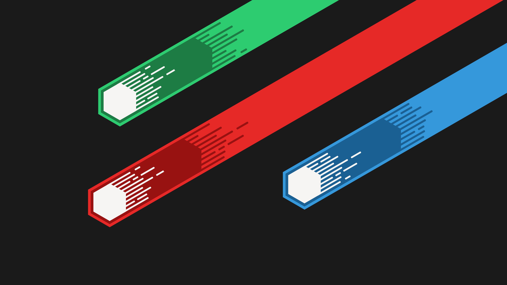

<div class="side-menu">
  <p-menubar [model]="items" styleClass="side-menu">
    <ng-template pTemplate="start">
      
    </ng-template>
    <ng-template pTemplate="end">
      <input type="text" pInputText placeholder="Search" />
    </ng-template>
  </p-menubar>
</div>
